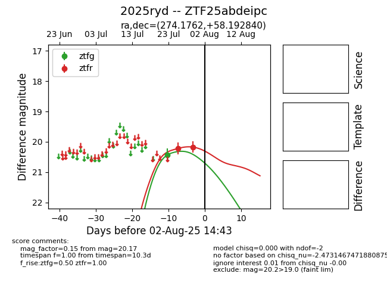

Target 2025ryd at 2025-08-06 17:27, see:
FINK: fink-portal.org/2025ryd
Lasair: lasair-ztf.lsst.ac.uk/objects/2025ryd
ALeRCE: alerce.online/object/2025ryd
TNS: wis-tns.org/object/2025ryd
YSE: ziggy.ucolick.org/yse/transient_detail/2025ryd
alt names
ZTF25abdeipc (ztf,fink)
2025ryd (tns,yse)
coordinates:
equatorial (ra, dec) = (274.1762,+58.19284)
galactic (l, b) = (87.0429,+27.27909)
photometry
last ztfg=20.44, ztfr=20.21
1 ztfg, 5 ztfr detections
